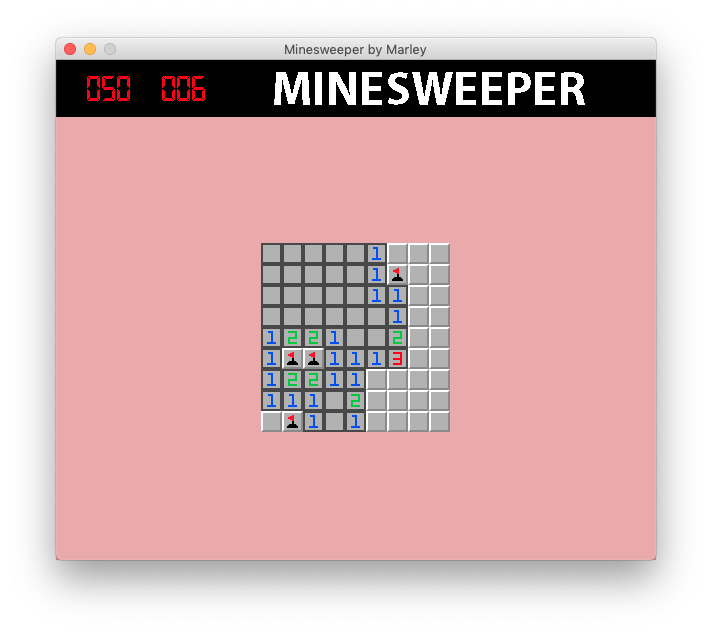
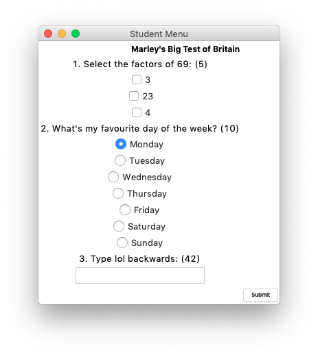
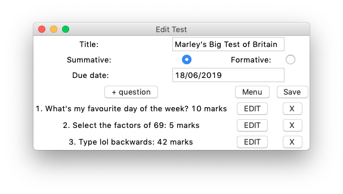
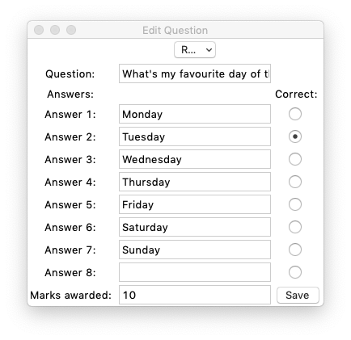
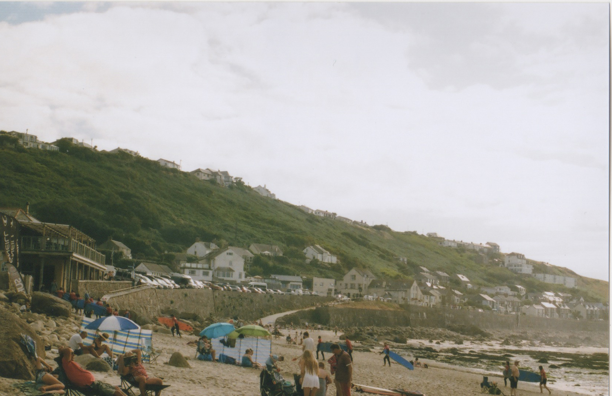
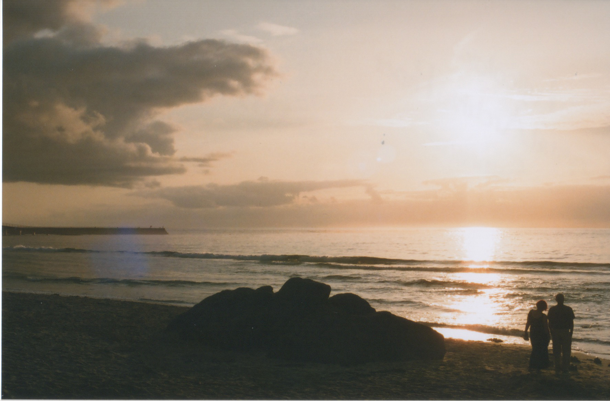
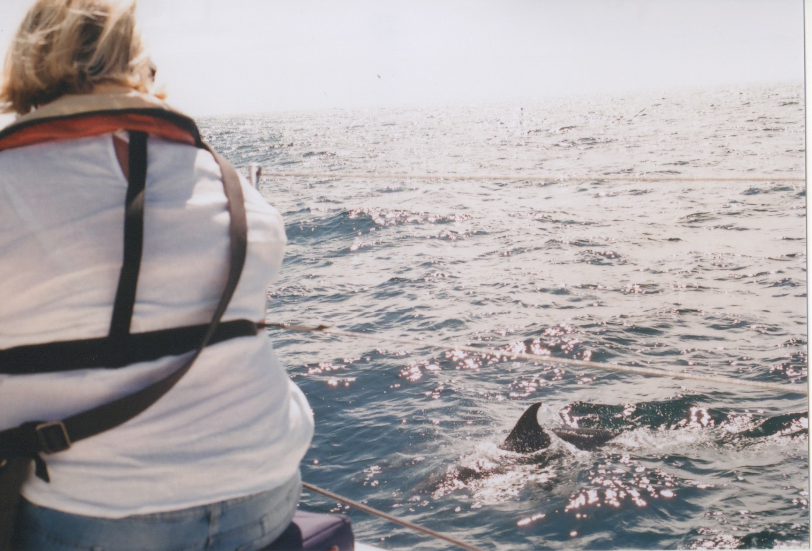
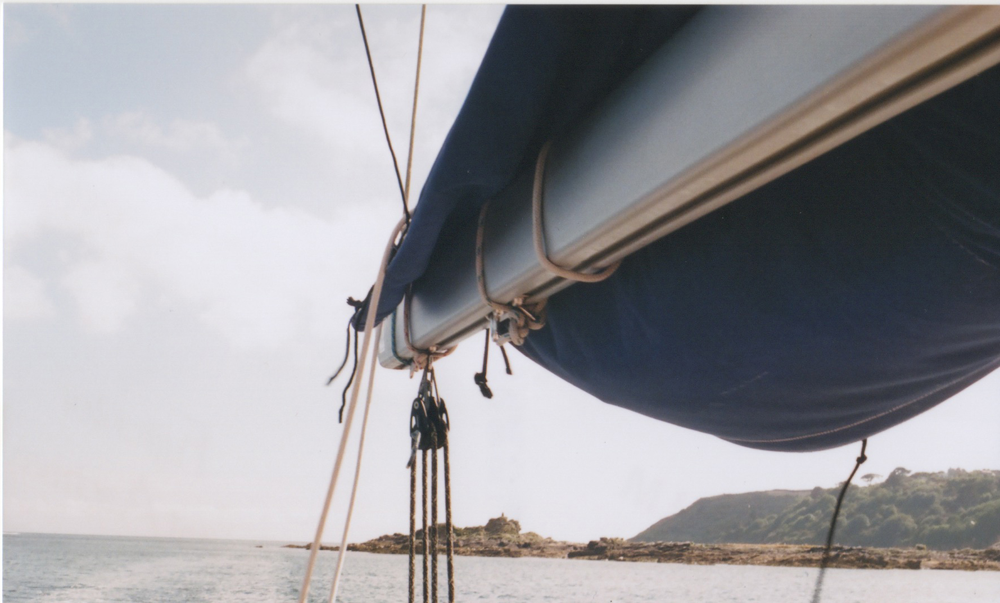
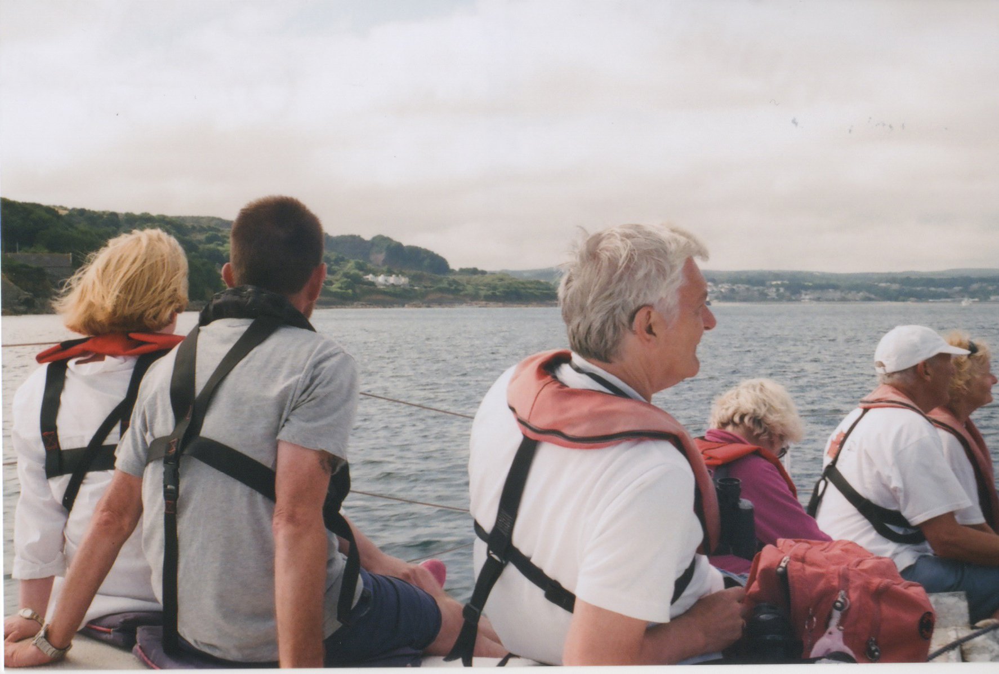

Here are some of the things I've done.
My main thing is computer programming. Here I will show examples of things I've done in Python and Java, but I also have experience with languages such as VB, C#, C++, Ruby and JavaScript.
I would say that Python is my most profficient language.
This program was actually a remake of an earlier Minesweeper I made in a language called MonkeyX. I thought I would remake in Python (Pygame) because no one's ever heard of MonkeyX.
It is based on the old-school MS Minesweeper, but with a few little extra bits of polish. It has music, sound effects, minamalist graphics and a "story".
Links:
At university we had a team-based coursework. This was to create a system which allows lecturers to create tests which students can then take. To do this we used the Tkinter library for Python. This was quite a long and challenging coursework, and although the final product could do with some polish, it met enough criteria for us to pass.
This is what it looks like when you are taking a test. Quite rough, like I said. This part was not my responsibility, but it makes the rest easier to understand.
This was one of the windows I made in the program. The option for summative or formative is to do with if it is contributing to a grade or not. I think most of the buttons are quite self-explanatory.
This is the menu which appears when you add a new question or edit a previously added question. The form controls present on the screen change depending on the question type selected at the top (I'm not sure why the text at the top is cropped; this only happens on Mac as far as I can tell).
I can't make the source code available here because I only wrote some of it, but I assure you it is ugly enough that looking at it would give you nightmares anyway.
I had two Java courseworks in my first year at university. I wrote reports on both of them which you can find below.
Again I can't make the source code available, but it is all fairly simple stuff.
Links:
After studying photography at GCSE, it has become a major hobby for me.
Beach 1.
Beach 2.
Beach 3.
Boat 1.
Boat 2.
Boat 3.